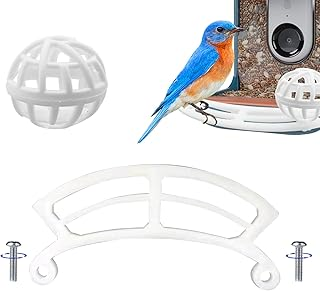

The design philosophy underpinning the Nordic Zenith Wall Perch is unequivocally rooted in the principles of Scandinavian modernism: a celebration of form following function, imbued with a deep appreciation for natural materials. Crafted from light-toned wood, its minimalist silhouette projects an understated elegance that integrates seamlessly into a myriad of decor schemes, from contemporary clean lines to more eclectic, bohemian sensibilities. The deliberate absence of superfluous ornamentation allows the shelf itself to serve as a quiet aesthetic anchor, drawing the eye without dominating the visual field. This inherent simplicity ensures it complements existing furnishings rather than competing with them, fostering an atmosphere of calm and uncluttered sophistication. The subtle curve or slight recess for items reinforces its thoughtful design, avoiding stark angles for a softer visual presence.
Beyond its visual appeal, the Nordic Zenith Wall Perch distinguishes itself through its astute understanding of real-world utility. Its compact footprint is a masterclass in vertical space optimization, offering a dedicated surface that keeps essential items beautifully organized and instantly accessible. The design appears perfectly scaled to accommodate a current novel or journal alongside a standard mug or teacup, preventing clutter from accumulating on bedside tables or window sills. Material quality is evident in the smooth finish and sturdy construction of the light wood, suggesting durability and a tactile experience that aligns with its premium positioning. Installation seems straightforward, and once mounted, it feels secure and capable of holding its intended lightweight contents without compromise, delivering on its promise of elevated comfort for a truly Hygge experience.
This minimalist wall shelf, crafted from light-toned wood, offers an elegant solution for organizing your reading essentials. It thoughtfully cradles a book and a beverage, enhancing vertical space with a touch of serene Nordic design.
View Current Price| Material | Premium Light Wood |
| Key Feature | Integrated Reading Nook Organizer |
| Aesthetic Style | Nordic Minimalist Hygge |